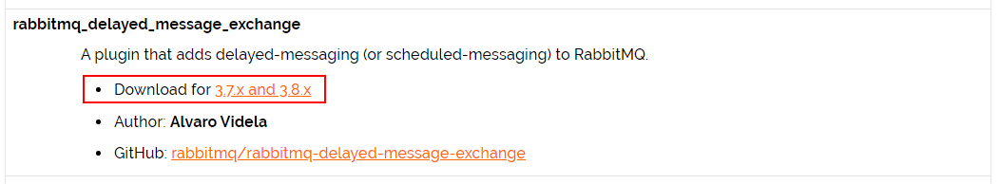
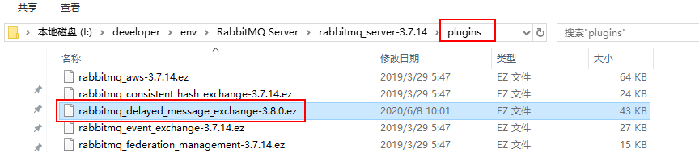
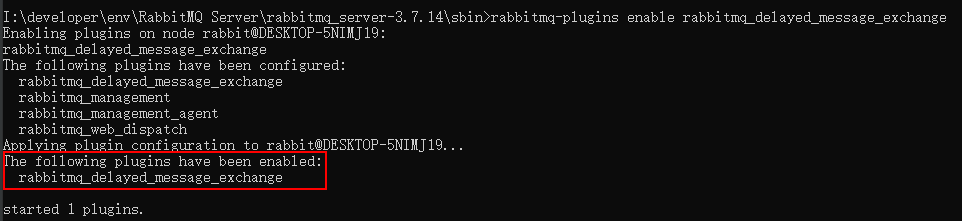
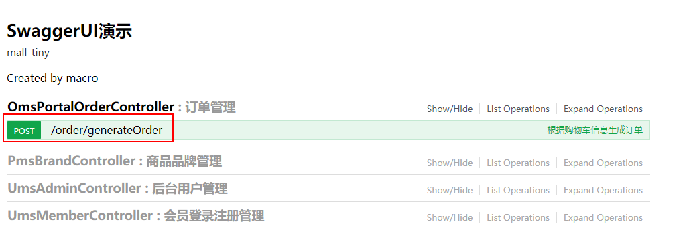

学习不走弯路，关注公众号 回复「学习路线」，获取mall项目专属学习路线！
RabbitMQ实现延迟消息居然如此简单，整个插件就完事了！
RabbitMQ实现延迟消息的方式有两种，一种是使用
死信队列实现，另一种是使用延迟插件实现。死信队列实现我们以前曾经讲过，具体参考《mall整合RabbitMQ实现延迟消息》，这次我们讲个更简单的，使用延迟插件实现。
学前准备
学习本文需要对RabbitMQ有所了解，还不了解的朋友可以看下：《花了3天总结的RabbitMQ实用技巧，有点东西！》
插件安装
首先我们需要下载并安装RabbitMQ的延迟插件。
去RabbitMQ的官网下载插件，插件地址：https://www.rabbitmq.com/community-plugins.html
直接搜索
rabbitmq_delayed_message_exchange即可找到我们需要下载的插件，下载和RabbitMQ配套的版本，不要弄错；

- 将插件文件复制到RabbitMQ安装目录的
plugins目录下；

- 进入RabbitMQ安装目录的
sbin目录下，使用如下命令启用延迟插件；
rabbitmq-plugins enable rabbitmq_delayed_message_exchange
- 启用插件成功后就可以看到如下信息，之后重新启动RabbitMQ服务即可。

实现延迟消息
接下来我们需要在SpringBoot中实现延迟消息功能，这次依然沿用商品下单的场景。比如说有个用户下单了，他60分钟不支付订单，订单就会被取消，这就是一个典型的延迟消息使用场景。
- 首先我们需要在
pom.xml文件中添加AMQP相关依赖；
<!--消息队列相关依赖-->
<dependency>
<groupId>org.springframework.boot</groupId>
<artifactId>spring-boot-starter-amqp</artifactId>
</dependency>
- 之后在
application.yml添加RabbitMQ的相关配置；
spring:
rabbitmq:
host: localhost # rabbitmq的连接地址
port: 5672 # rabbitmq的连接端口号
virtual-host: /mall # rabbitmq的虚拟host
username: mall # rabbitmq的用户名
password: mall # rabbitmq的密码
publisher-confirms: true #如果对异步消息需要回调必须设置为true
- 接下来创建RabbitMQ的Java配置，主要用于配置交换机、队列和绑定关系；
/**
* 消息队列配置
* Created by macro on 2018/9/14.
*/
@Configuration
public class RabbitMqConfig {
/**
* 订单延迟插件消息队列所绑定的交换机
*/
@Bean
CustomExchange orderPluginDirect() {
//创建一个自定义交换机，可以发送延迟消息
Map<String, Object> args = new HashMap<>();
args.put("x-delayed-type", "direct");
return new CustomExchange(QueueEnum.QUEUE_ORDER_PLUGIN_CANCEL.getExchange(), "x-delayed-message",true, false,args);
}
/**
* 订单延迟插件队列
*/
@Bean
public Queue orderPluginQueue() {
return new Queue(QueueEnum.QUEUE_ORDER_PLUGIN_CANCEL.getName());
}
/**
* 将订单延迟插件队列绑定到交换机
*/
@Bean
public Binding orderPluginBinding(CustomExchange orderPluginDirect,Queue orderPluginQueue) {
return BindingBuilder
.bind(orderPluginQueue)
.to(orderPluginDirect)
.with(QueueEnum.QUEUE_ORDER_PLUGIN_CANCEL.getRouteKey())
.noargs();
}
}
- 创建一个取消订单消息的发出者，通过给消息设置
x-delay头来设置消息从交换机发送到队列的延迟时间；
/**
* 取消订单消息的发出者
* Created by macro on 2018/9/14.
*/
@Component
public class CancelOrderSender {
private static Logger LOGGER =LoggerFactory.getLogger(CancelOrderSender.class);
@Autowired
private AmqpTemplate amqpTemplate;
public void sendMessage(Long orderId,final long delayTimes){
//给延迟队列发送消息
amqpTemplate.convertAndSend(QueueEnum.QUEUE_ORDER_PLUGIN_CANCEL.getExchange(), QueueEnum.QUEUE_ORDER_PLUGIN_CANCEL.getRouteKey(), orderId, new MessagePostProcessor() {
@Override
public Message postProcessMessage(Message message) throws AmqpException {
//给消息设置延迟毫秒值
message.getMessageProperties().setHeader("x-delay",delayTimes);
return message;
}
});
LOGGER.info("send delay message orderId:{}",orderId);
}
}
- 创建一个取消订单消息的接收者，用于处理订单延迟插件队列中的消息。
/**
* 取消订单消息的处理者
* Created by macro on 2018/9/14.
*/
@Component
@RabbitListener(queues = "mall.order.cancel.plugin")
public class CancelOrderReceiver {
private static Logger LOGGER =LoggerFactory.getLogger(CancelOrderReceiver.class);
@Autowired
private OmsPortalOrderService portalOrderService;
@RabbitHandler
public void handle(Long orderId){
LOGGER.info("receive delay message orderId:{}",orderId);
portalOrderService.cancelOrder(orderId);
}
}
- 然后在我们的订单业务实现类中添加如下逻辑，当下单成功之前，往消息队列中发送一个取消订单的延迟消息，这样如果订单没有被支付的话，就能取消订单了；
/**
* 前台订单管理Service
* Created by macro on 2018/8/30.
*/
@Service
public class OmsPortalOrderServiceImpl implements OmsPortalOrderService {
private static Logger LOGGER = LoggerFactory.getLogger(OmsPortalOrderServiceImpl.class);
@Autowired
private CancelOrderSender cancelOrderSender;
@Override
public CommonResult generateOrder(OrderParam orderParam) {
//todo 执行一系类下单操作，具体参考mall项目
LOGGER.info("process generateOrder");
//下单完成后开启一个延迟消息，用于当用户没有付款时取消订单（orderId应该在下单后生成）
sendDelayMessageCancelOrder(11L);
return CommonResult.success(null, "下单成功");
}
@Override
public void cancelOrder(Long orderId) {
//todo 执行一系类取消订单操作，具体参考mall项目
LOGGER.info("process cancelOrder orderId:{}",orderId);
}
private void sendDelayMessageCancelOrder(Long orderId) {
//获取订单超时时间，假设为60分钟(测试用的30秒)
long delayTimes = 30 * 1000;
//发送延迟消息
cancelOrderSender.sendMessage(orderId, delayTimes);
}
}
- 启动项目后，在Swagger中调用下单接口；

- 调用完成后查看控制台日志可以发现，从消息发送和消息接收处理正好相差了
30s，我们设置的延迟时间。
2020-06-08 13:46:01.474 INFO 1644 --- [nio-8080-exec-1] c.m.m.t.s.i.OmsPortalOrderServiceImpl : process generateOrder
2020-06-08 13:46:01.482 INFO 1644 --- [nio-8080-exec-1] c.m.m.tiny.component.CancelOrderSender : send delay message orderId:11
2020-06-08 13:46:31.517 INFO 1644 --- [cTaskExecutor-4] c.m.m.t.component.CancelOrderReceiver : receive delay message orderId:11
2020-06-08 13:46:31.520 INFO 1644 --- [cTaskExecutor-4] c.m.m.t.s.i.OmsPortalOrderServiceImpl : process cancelOrder orderId:11
两种实现方式对比
我们之前使用过死信队列的方式，这里我们把两种方式做个对比，先来聊下这两种方式的实现原理。
死信队列
死信队列是这样一个队列，如果消息发送到该队列并超过了设置的时间，就会被转发到设置好的处理超时消息的队列当中去，利用该特性可以实现延迟消息。
延迟插件
通过安装插件，自定义交换机，让交换机拥有延迟发送消息的能力，从而实现延迟消息。
结论
由于死信队列方式需要创建两个交换机（死信队列交换机+处理队列交换机）、两个队列（死信队列+处理队列），而延迟插件方式只需创建一个交换机和一个队列，所以后者使用起来更简单。
项目源码地址
https://github.com/macrozheng/mall-learning/tree/master/mall-tiny-delay
公众号